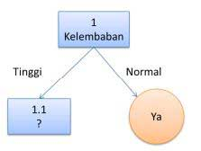

A. PENJELASAN DECISION TREE¶
Decision tree atau pohon keputusan adalah alat pendukung keputusan yang menggunakan model keputusan yang berbentuk seperti pohon. Decision tree memetakan berbagai alternatif yang mungkin untuk mengatasi suatu masalah, dan terdapat juga faktor-faktor kemungkinan yang dapat mempengaruhi alternatif tersebut beserta estimasi akhirnya jika memilih alternatif yang ada. Decision tree merupakan salah satu metode yang bisa digunaan untuk menampilkan algoritma dimana hanya berisi pernyataan kontrol bersyarat.
Decision tree digunakan untuk mengklasifikasikan suatu sampel data yang belum diketahui kelasnya ke dalam kelas–kelas yang sudah ada. Jalur pengujian data adalah pertama melalui root node dan terakhir adalah melalui leaf node yang akan menyimpulkan prediksi kelas bagi data tersebut. Atribut data harus berupa data kategorik, bila kontinu maka atribut harus didiskretisasi terlebih dahulu
Decision tree terdiri dari tiga jenis simpul:¶
- Simpul keputusan - biasanya diwakili oleh kotak
- Simpul peluang - biasanya diwakili oleh lingkaran
- Simpul akhir - biasanya diwakili oleh segitiga
Konsep Decision Tree¶
Decision tree digunakan untuk mengklasifikasikan suatu sampel data yang belum diketahui kelasnya ke dalam kelas yang sudah ada. Jalur pengujian data adalah pertama melalui root node dan terakhir adalah melalui leaf node yang akan menyimpulkan prediksi kelas bagi data tersebut. Atribut data harus berupa data kategorik, bila kontinu maka atribut harus didiskretisasi terlebih dahulu.
Karakteristik Decision Tree¶
Berikut ini adalah beberapa karakteristik decision tree secara umum :
• Decision tree merupakan suatu pendekatan nonparametrik untuk membangun model klasifikasi
• Teknik yang dikembangkan dalam membangun decision tree memungkinkan untuk membangun model secara cepat dari training set yang berukuran besar.
• Decision tree dengan ukuran tree yang kecil relatif mudah untuk menginterpretasinya.
• Decision tree memberikan gambaran yang ekpresif dalam pembelajaran fungsi nilai diskret.
• Algoritma decision tree cukup robbust terhadap munculnya noise terutama untuk metode yang dapat menangani masalah overfitting.
• Adanya atribut yang berlebihan tidak terlalu mengurangi akurasi decision tree .
• Karena sebagian algoritma decision tree menggunakan pendekatan topdown, yaitu partisi dilakukan secara rekursif maka jumlah record menjadi lebih kecil. Pada leaf node, jumlah record mungkin akan terlalu kecil untuk dapat membuat keputusan secara statistik tentang representasi kelas dari suatu node.
• Sebuah subtree dapat direplikasi beberapa kali dalam decision tree tetapi ini akan menyebabkan decision tree menjadi lebih kompleks dan lebih sulit untuk diinterpretasi.
B. ALGORITMA ID3¶
Algoritma ID3 merupakan algoritma yang dipergunakan untuk membangun sebuah decision tree atau pohon keputusan. Algoritma ini ditemukan oleh J. Ross Quinlan (1979), dengan memanfaatkan Teori Informasi atau Information Theory milik Shanon. ID3 sendiri merupakan singkatan dari Iterative Dichotomiser 3.
Decision tree menggunakan struktur hierarki untuk pembelajaran supervised. Proses dari decision tree dimulai dari root node hingga leaf node yang dilakukan secara rekursif. Di mana setiap percabangan menyatakan suatu kondisi yang harus dipenuhi dan pada setiap ujung pohon menyatakan kelas dari suatu data.
Proses dalam decision tree yaitu mengubah bentuk data (tabel) menjadi model pohon (tree) kemudian mengubah model pohon tersebut menjadi aturan (rule).
C. ARSITEKTUR DECISION TREE¶
Arsitektur pohon keputusan dibuat menyerupai bentuk pohon, dimana pada umumnya sebuah pohon terdapat akar (root), cabang dan daun (leaf). Pada pohon keputusan juga terdiri dari tiga bagian sebagai berikut :
a. Root node atau node akar merupakan node yang terletak paling atas dari suatu pohon.
b. Internal Node ini merupakan node percabangan, dimana pada node ini hanya terdapat satu input dan mempunyai minimal dua output.
c. Leaf Node ini merupakan node akhir, hanya memiliki satu input, dan tidak memiliki output. Pada pohon keputusan setiap leaf node menandai label kelas.
Pada pohon keputusan di setiap percabangan menyatakan kondisi yang harus dipenuhi dan tiap ujung pohon menyatakan nilai kelas data. Gambar berikut merupakan bentuk arsitektur pohon keputusan.
Pemilihan atribut untuk menjadi rootnode atau internal node sebagai atribut test berdasarkan atas ukuran impurity dari masing–masing atribut. Ukuran–ukuran impurity yang umumnya digunakan adalah information gain, gain ratio dan gini index. Atribut yang memiliki nilai impurity tertinggi akan dipilih sebagai atribut test.

Langkah-Langkah Konstruksi Pohon Keputusan dengan Algoritma ID3¶
Adapun langkah-langkah dalam konstruksi pohon keputusan adalah sebagai berikut :
Langkah 1 : Pohon dimulai dengan sebuah simpul yang mereperesentasikan sampel data pelatihan yaitu dengan membuat simpul akar.
Langkah 2 : Jika semua sampel berada dalam kelas yang sama, maka simpul ini menjadi daun dan dilabeli menjadi kelas. Jika tidak, information gain akan digunakan untuk memilih atribut terbaik dalam memisahkan data sampel menjadi kelas-kelas individu.
Langkah 3 : Cabang akan dibuat untuk setiap nilai pada atribut dan data sampel akan dipartisi lagi.
Langkah 4 : Algoritma ini menggunakan proses rekursif untuk membentuk pohon keputusan pada setiap data partisi. Jika sebuah atribut sduah digunakan disebuah simpul, maka atribut ini tidak akan digunakan lagi di simpul anak-anaknya.
Langkah 5 : Proses ini berhenti jika dicapai kondisi seperti berikut :
– Semua sampel pada simpul berada di dalam satu kelas
– Tidak ada atribut lainnya yang dapat digunakan untuk mempartisi sampel lebih lanjut. Dalam hal ini akan diterapkan suara terbanyak. Ini berarti mengubah sebuah simpul menjadi daun dan melabelinya dnegan kelas pada suara terbanyak.
Entropy & Information Gain¶
Algoritma pada metode ini menggunakan konsep dari entropi. Konsep Entropi yang digunakan untuk mengukur “seberapa informatifnya” sebuah node (yang biasanya disebut seberapa baiknya).
Entropi(S) = 0, jika semua contoh pada S berada dalam kelas yang sama.
Entroiy(S) = 1, jika jumlah contoh positif dan jumlah contoh negatif dalam S adalah sama.
0 < Entropi(S) < 1, jika jumlah contoh positif dan negatif dalam S tidak sama. $$ \begin{equation} (S)=\sum_{j=1}^{k}-p_{j} \log {2} p{j} \end{equation} $$ Dimana:
• S adalah himpunan (dataset) kasus
• k adalah banyaknya partisi S
• pj adalah probabilitas yang di dapat dari Sum(Ya) dibagi Total Kasus.
Setelah mendapat nilai entropi, pemilihan atribut dilakukan dengan nilai information gain terbesar. $$ \begin{equation} \operatorname{Gain}(A)=E n t r o p i(S)-\sum_{i=1}^{k} \frac{\left|S_{i}\right|}{|S|} \times E n t r o p i\left(S_{i}\right) \end{equation} $$ Dimana:
S = ruang (data) sample yang digunakan untuk training.
A = atribut.
|Si| = jumlah sample untuk nilai V.
|S| = jumlah seluruh sample data.
Entropi(Si) = entropy untuk sample-sample yang memiliki nilai i
D. PERHITUNGAN SEDERHANA DECISION TREE¶
Contoh¶
Data yang telah ada pada Tabel dibawah akan digunakan untuk membentuk pohon keputusan dimana memiliku atribut-atribut seperti Cuaca, Suhu, Kelembaban, dan Berangin. Setiap atribut memiliki nilai. Sedangkan kelasnya ada pada kolom Main yaitu kelas “Tidak” dan kelas “Ya”. Kemudian data tersebut dianalisis; dataset tersebut memiliki 14 kasus yang terdiri 10 “Ya” dan 4 “Tidak” pada kolom Main.
| NO | CUACA | SUHU | KELEMBAPAN | BERANGIN | MAIN |
|---|---|---|---|---|---|
| 1 | cerah | panas | tinggi | salah | tidak |
| 2 | cerah | panas | tinggi | benar | tidak |
| 3 | berawan | panas | tinggi | salah | ya |
| 4 | hujan | sejuk | tinggi | salah | ya |
| 5 | hujan | dingin | normal | salah | ya |
| 6 | hujan | dingin | normal | benar | ya |
| 7 | berawan | dingin | normal | benar | ya |
| 8 | cerah | sejuk | tinggi | salah | tidak |
| 9 | cerah | dingin | normal | salah | ya |
| 10 | hujan | sejuk | normal | salah | ya |
| 11 | cerah | sejuk | normal | benar | ya |
| 12 | berawan | sejuk | tinggi | benar | ya |
| 13 | berawan | panas | normal | salah | ya |
| 14 | hujan | sejuk | normal | benar | tidak |
Penyelesaian¶
hitung entropi
*Entropi (S) = (-(10/14) x log*2 *(10/14) + (-(4/10) x log*2 (4/10)) = 0.863120569
| Total Kasus | sum(YA) | sum(TIDAK) | Entropi Total |
|---|---|---|---|
| 14 | 10 | 4 | 0.863120569 |
Setelah mendapatkan entropi dari keseluruhan kasus, lakukan analisis pada setiap atribut dan nilai-nilainya dan hitung entropinya.
Setelah mendapatkan nilai entropy, berikutnya hitung nilai information gain dari setiap variabel.
Gain (Cuaca) = 0.863120569 – ((4/10) x 0 + (5/14) x 0.721928095 + (5/14) x 0.970950594) = 0.258521037
Hitung pula Gain (Suhu), Gain (Kelembaban), dan Gain (Berangin). Karena nilai gain terbesar adalah Gain (Kelembaban), maka atribut “Kelembaban” menjadi node akar (root node).
Kemudian pada “Kelembaban” normal, memiliki 7 kasus dan semuanya memiliki jawaban Ya (Sum(Total) / Sum(Ya) = 7/7 = 1). Dengan demikian “Kelembaban” normal menjadi daun atau leaf.

Berdasarkan pembentukan pohon keputusan node 1 (root node), Node 1.1 akan dianalisis lebih lanjut. Untuk mempermudah, Tabel dibawah difilter, dengan mengambil data yang memiliki “Kelembaban” = Tinggi.
Kemudian dihitung nilai entropi atribut “Kelembaban” Tinggi dan entropi setiap atribut serta gainnya. Setelah itu tentukan pilih atribut yang memiliki gain tertinggi untuk dibuatkan node berikutnya.
Gain tertinggi yang didapat ada pada atribut “Cuaca”, dan Nilai yang dijadikan daun atau leaf adalah Berawan dan Cerah. Jika divualisasi maka pohon keputusan tampak seperti Gambar dibawah.
Untuk menganalisis node 1.1.2, lakukan lagi langkah-langkah yang sama seperti sebelumnya hingga semua node beberntuk node leaf.
E. KELEBIHAN DAN KEKURANGAN DECISION TREE¶
KELEBIHAN¶
- Daerah pengambilan keputusan yang sebelumnya kompleks dan sangat global, dapat diubah menjadi simple dan spesifik.
- Eliminasi perhitungan-perhitungan yang tidak diperlukan, karena ketika menggunakan metode pohon keputusan maka contoh diuji hanya berdasarkan kriteria atau kelas-kelas tertentu.
- Fleksibel untuk memilih fitur dari internal node yang berbeda, fitur yang terpilih akan membedakan suatu kriteria dibandingkan kriteria yang lain dalam node yang sama.
- Metode pohon keputusan dapat menghindari munculnya permasalahan ini dengan menggunakan kriteria yang jumlahnya lebih sedikit pada setiap node internal tanpa banyak mengurangi kualitas keputusan yang dihasilkan.
KEKURANGAN¶
- Terjadi overlap terutama ketika kelas-kelas dan kriteria yang digunakan jumlahnya sangat banyak. Hal tersebut juga dapat menyebabkan meningkatnya waktu pengambilan keputusan dan jumlah memori yang diperlukan.
- Pengakumulasian jumlah eror dari setiap tingkat dalam sebuah pohon keputusan yang besar.
- Kesulitan dalam mendesain pohon keputusan yang optimal
- Hasil kualitas keputusan yang didapatkan dari metode pohon keputusan sangat tergantung pada bagaimana pohon tersebut didesain.
F. IMPLEMENTASI DECISION TREE HABERMAN DATASET MENGGUNAKAN PYTHON SCIKIT LEARN¶
Dataset¶
- Judul: Haberman's Survival Data
- Sources: (a) Donor: Tjen-Sien Lim (limt@stat.wisc.edu) (b) Date: March 4, 1999
- Jumlah Instances: 306
- Jumlah Attributes: 4 (termasuk attribute class)
- Informasi Attribute:
- Age of patient at time of operation (numerical)
- Patient's year of operation (year - 1900, numerical)
- Number of positive axillary nodes detected (numerical)
- Survival status (class attribute) 1 = the patient survived 5 years or longer 2 = the patient died within 5 year
Implementasi¶
Langkah 1: Import Librari Python Machine Learning¶
Bagian ini melibatkan mengimpor semua perpustakaan yang akan kita gunakan. Kami mengimpor modul numpy dan sklearn train_test_split, DecisionTreeClassifier & akurasi_score.
import numpy as np import pandas as pd from sklearn.model_selection import train_test_split from sklearn.tree import DecisionTreeClassifier from sklearn.metrics import accuracy_score from sklearn import tree
Numpy array dan panda dataframe akan membantu kita dalam memanipulasi data. Seperti dibahas di atas, sklearn adalah perpustakaan pembelajaran mesin. Metode cross_validation train_test_split () akan membantu dengan memecah data menjadi train & test set. Modul tree akan digunakan untuk membangun Decision Tree Classifier. Modul Accutacy_score akan digunakan untuk menghitung metrik akurasi dari variabel kelas yang diprediksi.
Langkah 2: Data Import¶
Untuk mengimpor data dan memanipulasinya, kita akan menggunakan kerangka data panda. Pertama-tama, kita perlu mengunduh dataset. Anda dapat mengunduh dataset dari sini. Semua nilai data dipisahkan oleh koma. Setelah mengunduh file data, kami akan menggunakan metode Pandas read_csv () untuk mengimpor data ke dalam kerangka data panda. Karena data kami dipisahkan dengan koma "," dan tidak ada tajuk dalam data kami, jadi kami akan menempatkan nilai parameter "None" dan nilai parameter sep sebagai ",".
balance_data = pd.read_csv( 'https://archive.ics.uci.edu/ml/machine-learning-databases/haberman/haberman.data', sep= ',', header= None)
Kami menyimpan data ke dalam variabel data "balance_data".
Untuk memeriksa panjang & dimensi kerangka data, kami dapat menggunakan metode len () & “.shape”.
print ("Dataset Lenght:: ", len(balance_data)) print ("Dataset Shape:: ", balance_data.shape)
Output
Kita dapat print head .e, menggunakan method head() atau method print itu sendiri
print ("Dataset:: ") balance_data.head() #atau print (balance_data)
Output

Langkah 3: Data Slicing¶
Data Slicing (Mengiris data) adalah langkah untuk membagi data menjadi set training dan testing. Kumpulan data pelatihan dapat digunakan secara khusus untuk pembangunan model. Dataset testing tidak boleh dicampuradukkan saat membangun model. Bahkan selama standardisasi, kita tidak boleh menstandarisasi set testing.
X = balance_data.values[:, 1:5] Y = balance_data.values[:,0]
script di atas membagi data menjadi set fitur & target yang ditetapkan. Set "X" terdiri dari variabel prediktor. Ini terdiri dari data dari kolom 2 hingga kolom 5. Set "Y" terdiri dari variabel hasil. Ini terdiri dari data di kolom 1. Kami menggunakan ".values" dari numpy yang mengubah dataframe kami menjadi array numpy.
Mari kita pisahkan data kita menjadi set training dan testing. Kami akan menggunakan metode sklearn train_test_split ().
X_train, X_test, y_train, y_test = train_test_split( X, Y, test_size = 0.3, random_state = 100)
script di atas akan membagi data menjadi set training dan testing. X_train, y_train adalah data training & X_test, y_test milik dataset testing.
Parameter test_size diberi nilai 0,3; itu berarti set tes akan menjadi 30% dari seluruh dataset & ukuran dataset training akan menjadi 70% dari seluruh dataset. variabel random_state adalah keadaan generator angka pseudo-acak yang digunakan untuk pengambilan sampel acak. Jika Anda ingin mereplikasi hasil kami, maka gunakan nilai random_state yang sama.
Langkah 4: Decision Tree Training¶
Sekarang kita mencocokan algoritma Decision Tree pada data training, memprediksi label untuk dataset validasi dan mencetak akurasi model menggunakan berbagai parameter.
DecisionTreeClassifier (): Ini adalah fungsi classifier untuk DecisionTree merupakan fungsi utama untuk mengimplementasikan algoritma. Beberapa parameter penting adalah:
- Criterion: Ini mendefinisikan fungsi untuk mengukur kualitas split. Sklearn mendukung kriteria "gini" untuk Indeks Gini & "entropi" untuk Penguatan Informasi. Secara default, dibutuhkan nilai "gini".
- splitter: Ini mendefinisikan strategi untuk memilih split pada setiap node. Mendukung nilai "best" untuk memilih split terbaik & "random" untuk memilih split acak terbaik. Secara default, dibutuhkan nilai "best".
- max_features: Ini menentukan no. fitur yang perlu dipertimbangkan ketika mencari perpecahan terbaik. Kami dapat memasukkan nilai integer, float, string & None. Jika integer dimasukkan, maka nilai tersebut dianggap sebagai fitur maksimal pada setiap pemisahan. Jika nilai float diambil maka ini menunjukkan persentase fitur di setiap split. Jika "otomatis" atau "sqrt" diambil maka max_features = sqrt (n_features). Jika "log2" diambil maka max_features = log2 (n_features). Jika None, maka max_features = n_features. Secara default, dibutuhkan nilai "none".
- max_depth: Parameter max_depth menunjukkan kedalaman maksimum pohon. Itu bisa mengambil nilai integer atau none. Jika none, maka node diperluas sampai semua daun murni atau sampai semua daun mengandung kurang dari sampel min_samples_split. Secara default, dibutuhkan nilai "None".
- min_samples_split: Ini memberitahu di atas no minimum. sampel reqd. untuk membagi simpul internal. Jika nilai integer diambil maka pertimbangkan min_samples_split sebagai no minimum. Jika mengambang, maka itu menunjukkan persentase. Secara default, dibutuhkan nilai "2".
- min_samples_leaf: Jumlah sampel minimum yang diperlukan berada pada simpul daun. Jika nilai integer diambil maka pertimbangkan min_samples_leaf sebagai no minimum. Jika mengambang, maka itu menunjukkan persentase. Secara default, dibutuhkan nilai “1”.
- max_leaf_nodes: Ini mendefinisikan jumlah maksimum dari node leaf yang mungkin. Jika none maka dibutuhkan jumlah daun yang tidak terbatas. Secara default, dibutuhkan nilai "None".
- min_impurity_split: Ini mendefinisikan ambang batas untuk menghentikan pertumbuhan pohon awal. Suatu simpul akan terpecah jika kenajisannya berada di atas ambang batas kalau tidak itu adalah daun.
Mari kita buat pengklasifikasi menggunakan kriteria sebagai indeks gini & keuntungan informasi. Kita harus menyesuaikan classifier kita menggunakan fit (). Kami akan memplot visualisasi classifier pohon keputusan kami juga.
Decision Tree Classifier dengan kriteria GINI
clf_gini = DecisionTreeClassifier(criterion = "gini", random_state = 306, max_depth=3, min_samples_leaf=5) clf_gini.fit(X_train, y_train) DecisionTreeClassifier(class_weight=None, criterion='gini', max_depth=10, max_features=None, max_leaf_nodes=None, min_samples_leaf=5, min_samples_split=2, min_weight_fraction_leaf=0.0, presort=False, random_state=306, splitter='best')
Output
Decision Tree Classifier dengan kriteria information gain
clf_entropy = DecisionTreeClassifier(criterion = "entropy", random_state = 306, max_depth=3, min_samples_leaf=5) clf_entropy.fit(X_train, y_train) DecisionTreeClassifier(class_weight=None, criterion='entropy', max_depth=3, max_features=None, max_leaf_nodes=None, min_samples_leaf=5, min_samples_split=2, min_weight_fraction_leaf=0.0, presort=False, random_state=306, splitter='best')
Output
Langkah 5: Prediction¶
Sekarang, kami telah memodelkan 2 pengklasifikasi. Satu classifier dengan indeks gini & satu lagi dengan information gain sebagai kriteria. Kami siap memprediksi kelas untuk set testing kami. Kita dapat menggunakan metode predict (). Mari kita coba memprediksi variabel target untuk catatan pertama kelompok testing.
clf_gini.predict([[4, 4, 3, 3]])
Dengan cara ini kita dapat memprediksi kelas untuk satu catatan. Sudah waktunya untuk memprediksi variabel target untuk seluruh dataset pengujian.
Prediction untuk Decision Tree classifier dengan criterion sebagai gini index¶
y_pred = clf_gini.predict(X_test) print(y_pred)
Output

Prediction untuk Decision Tree classifier dengan criterion sebagai information gain¶
y_pred_en = clf_entropy.predict(X_test) print(y_pred_en)
Output
Langkah 6: Menghitung Score Akurasi¶
Function akurasi_score () akan digunakan untuk mencetak akurasi algoritma Decision Tree. Secara akurat, maksud kami adalah rasio titik data yang diprediksi dengan benar dengan semua titik data yang diprediksi. Akurasi sebagai matrik membantu memahami efektivitas algoritme . Dibutuhkan 4 parameter.
- y_true,
- y_pred,
- Normalize,
- sample_weight.
Dari 4 ini, normalisasi & sample_weight adalah parameter opsional. Parameter y_true menerima larik label yang benar dan y_pred mengambil larik label yang diprediksi yang dikembalikan oleh classifier. Ini mengembalikan akurasi sebagai nilai float.
Accuracy untuk Decision Tree classifier dengan criterion sebagai gini index¶
print ("Accuracy gini index ", accuracy_score(y_test,y_pred)*100)
Output
Accuracy untuk Decision Tree classifier denga criterion sebagai information gain¶
print ("Accuracy information gain ", accuracy_score(y_test,y_pred_en)*100)
Output
REFERENSI¶
https://informatikalogi.com/algoritma-id3/
https://sinta.unud.ac.id/uploads/wisuda/1108605014-3-Bab%20II.pdf
https://www.academia.edu/35688101/MAKALAH_KLASIFIKASI_DECISION_TREE
https://garudacyber.co.id/artikel/1545-pengertian-dan-penerapan-decision-tree
http://dataaspirant.com/2017/02/01/decision-tree-algorithm-python-with-scikit-learn/